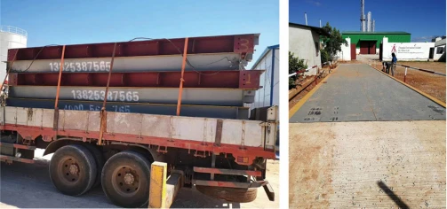
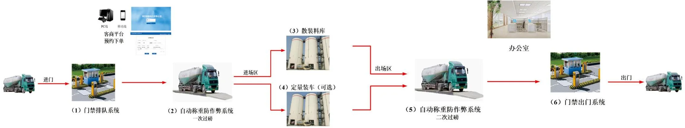
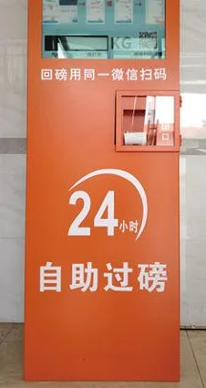
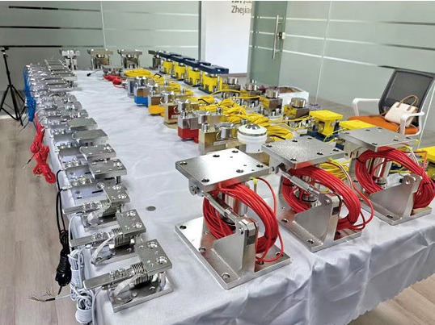
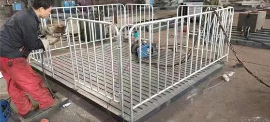
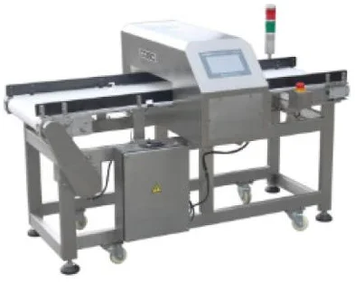
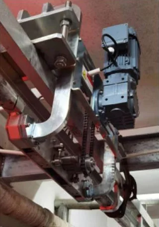
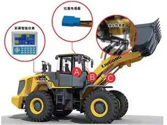
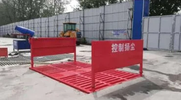

分体式汽车衡
SCS 系列量程 20 至 150 吨，可按现场条件选择地上或基坑安装。分体式秤台采用高强度螺栓连接，便于集装箱运输。型号包括 SCS-20、30、50、60、80、100、120、150，可选地上或基坑安装。
邮件询价 对比汽车衡型号没有匹配的设备。 重置

SCS 系列量程 20 至 150 吨，可按现场条件选择地上或基坑安装。分体式秤台采用高强度螺栓连接，便于集装箱运输。型号包括 SCS-20、30、50、60、80、100、120、150，可选地上或基坑安装。
邮件询价 对比汽车衡型号
支持单向或双向过磅，可配置刷卡、车牌或二维码识别，联动车位检测、抓拍和道闸。
邮件询价 无人值守地磅方案量程 0.5、1、2、3、5、8 t。台面可选碳钢花纹板或不锈钢，可配引坡。
邮件询价 小地磅选型量程 0.5、1、2、3、5 t。适用于叉车与人工搬运称重，可选不锈钢材质。
邮件询价 小地磅选型不锈钢平台，可配引坡；量程 0.5、1、2、3、5、8 t。
邮件询价 小地磅选型
预约、门禁排队、首次称重、散料装车或定量装车、二次过磅和出场放行。
邮件询价 无人值守地磅方案
车辆称重现场的自助操作终端，支持扫码过磅。
邮件询价 无人值守地磅方案
按轨道车辆类型、线路布置及作业流程确定配置。
邮件询价 相关行业方案
用于连续输送的散料计量，选型时需考虑带宽、带速和物料特性。
邮件询价 相关行业方案
容器称重需要考虑支撑结构、管路连接和称重模块的安装条件。
邮件询价 相关行业方案
2–25 t 料塔采用 4、6 或 8 个支点，配悬臂梁模块、接线盒与 K3S 控制器。
邮件询价 相关行业方案
可选围栏秤台和引坡，可选 0.5、1、2、3、5、8 t 量程。
邮件询价 相关行业方案
按项目、合同和强度等级统计车次与方量，支持分批出货、磅单打印和 ERP 对接。
邮件询价 相关行业方案
采用平衡式检测和相位调节，适用于食品及制药生产线。
邮件询价 相关行业方案
量程 300、500、1000 kg，对应分度值 0.1、0.2、0.5 kg，支持 RS232 和以太网。
邮件询价 相关行业方案
装载机铲装物料时，通过车载传感器及仪表读取重量。
邮件询价 相关行业方案
车辆通道配套设备，用于车辆驶离现场前冲洗车轮。
邮件询价 无人值守地磅方案柱式承载结构，用于汽车衡称重，具备防作弊及防雷设计。
邮件询价 对比汽车衡型号轮辐式弹性体，适用于工业称重；数字通信便于识别各传感器。
邮件询价 对比汽车衡型号模块式安装，带调平装置；提供 30 至 150 吨多个规格。
邮件询价 对比汽车衡型号不锈钢焊接密封结构，适用于化工、搅拌站和水泥厂等场景。
邮件询价 相关行业方案用于罐体秤等测力系统，按支点载荷选型。
邮件询价 相关行业方案适用于大型罐体秤，规格为 30、40、50、100、200、300、500 t。
邮件询价 相关行业方案安装于罐体支撑点，将载荷转换为称重信号。
邮件询价 相关行业方案用于料斗秤、皮带秤和配料系统。
邮件询价 相关行业方案用于过磅车辆的电子标签识别；支持 ISO 18000-6B 和 EPC Class 1 Gen 2 标签。
邮件询价 无人值守地磅方案最高分辨率 1920 × 1080，支持车辆识别及道闸联动。
邮件询价 无人值守地磅方案支持 NFC 刷卡及一维、二维码识读，可通过以太网连接。
邮件询价 无人值守地磅方案红绿 LED 指示车辆停止或通行，适用于称重车道。
邮件询价 无人值守地磅方案交直流两用，适用于电子地磅、汽车衡及静态轨道衡。
邮件询价 小地磅选型不锈钢外壳、橡胶按键，支持交直流供电及联网。
邮件询价 小地磅选型铝合金面板式控制器，用于包装秤、配料秤及上下限控制。
邮件询价 相关行业方案24 针平推式打印，支持磅单格式设置和 1+6 联复写。
邮件询价 小地磅选型